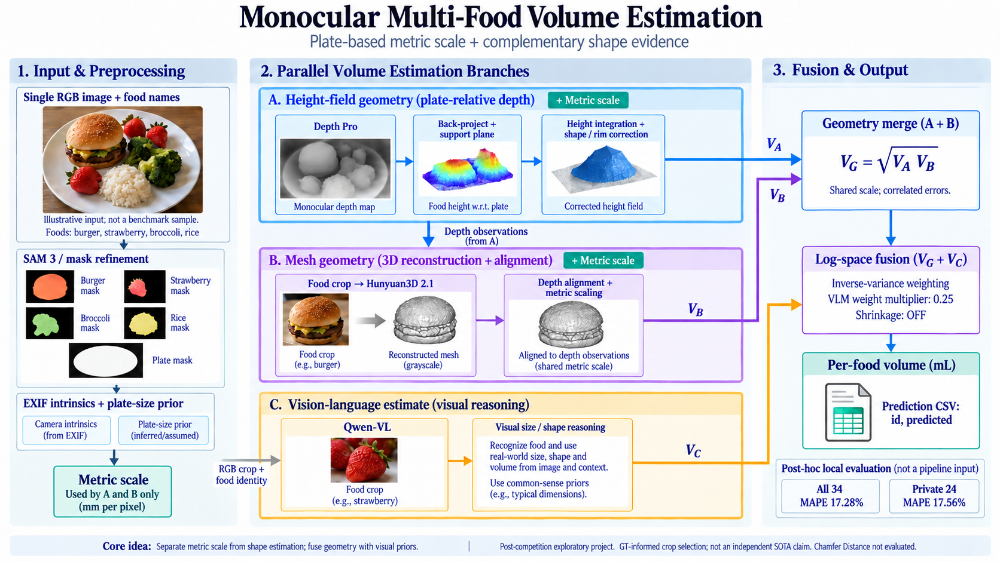

A · 높이장 기하
Depth Pro → 역투영 → 지지평면 피팅 → 높이 적분. 형상별 충전율과 용기 테두리 측정으로 단순 바닥 가정을 보정합니다.
한 장의 RGB 이미지에서 음식의 형상과 실제 스케일을 분리해 추정합니다. 깊이·메시·시각언어 모델의 서로 다른 증거를 결합해 음식별 부피를 mL 단위로 출력합니다.

음식과 접시를 분리한 뒤 EXIF 내부 파라미터와 접시 크기 사전정보로 기하 경로의 스케일을 맞춥니다. 접시 크기는 실측 GT가 아니라 추정·가정한 값입니다.
Depth Pro → 역투영 → 지지평면 피팅 → 높이 적분. 형상별 충전율과 용기 테두리 측정으로 단순 바닥 가정을 보정합니다.
음식 크롭 → Hunyuan3D 2.1 → 깊이 관측 정합 → 실제 스케일 부여 → 메시 부피. A와 깊이·마스크·스케일을 공유하므로 독립적인 증거가 아닙니다.
Qwen-VL이 이미지와 음식 정보에서 크기·형상·부피를 추론합니다. 접시 기반 기하 스케일을 직접 입력받는 경로는 아닙니다.
A·B를 기하평균으로 합친 뒤 C와 로그공간 역분산 가중 융합을 수행합니다. VLM 가중치 배율은 0.25이며 고정된 25% 혼합 비율이 아닙니다. 수축 보정은 꺼져 있습니다.
용기 분기: 유효한 용기 내부 부피 추정이 있으면 해당 값을 바로 사용하며 A·B·C 융합을 건너뜁니다.
2026-10-06 재채점. MAPE는 낮을수록 좋습니다. 공식 Kaggle 순위나 새로 조회한 제출 점수가 아닙니다.
| 설정 | 전체 34개 | Public 10개 | Private 24개 |
|---|---|---|---|
| 이전 융합 | 19.80% | 20.08% | 19.68% |
| 테두리 측정 | 17.42% | 16.65% | 17.74% |
| 최종 저장본 | 17.28% | 16.60% | 17.56% |
벤치마크 논문 Table 2의 24개 대상 MAPE는 MDMS 21%, SGPS 31%, PSHS 46%, GPT-5.2 34%입니다. 비교에 가까운 우리 측 범위는 private 24개입니다. 원 논문
이 결과는 독립적인 SOTA 성능이 아닙니다. 대회 종료 후 public·private 피드백을 볼 수 있었고, 크롭 배율 5.0은 GT 피드백으로 선택했습니다. 이후 GT 접근 차단 실험이나 대리지표 확인이 이 개발 과정의 노출을 없애지는 않습니다.
동일 조건의 Chamfer Distance, 공식 순위, 새 데이터에서의 일반화, 전체 파이프라인의 기기 간 결정성은 검증하지 않았습니다. 이전의 0.198은 중간 설정, 0.1685는 무시드 샘플링 결과이며 최종 기준값으로 사용하지 않습니다.
src/에는 기하·분할·생성·융합·진단 코드가 있고, scripts/에는 최종 설정 선택과 재채점 도구가 있습니다. tests/는 채점과 수치 로직을 확인합니다. 새 환경에서의 전체 GPU 추론 재현은 아직 검증하지 않았습니다.
원본 사진·GT·가중치·캐시·자격 증명은 포함하지 않습니다. 필요한 데이터는 Kaggle에서 해당 조건에 따라 내려받아야 합니다.